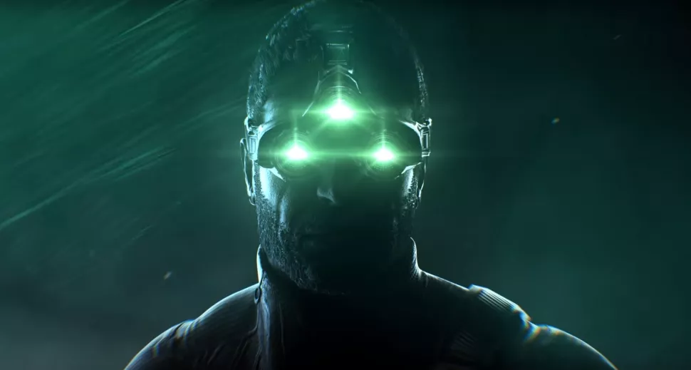

GAME NEWS
God of War is coming to PC in January
After nearly a full year of speculation and hope, God of War, Sony's tale of Olympian demi-gods, Nordic deities, and the trials and tribulations fatherhood, is now listed on Steam. More ...
30,000 FIFA cheaters whacked with retrospective red cards
It's an interesting time to be a FIFA fan. This year's entry may be the best yet, and it may also be the last in the series to bear the FIFA name. More ...

No Man's Sky's latest expedition lets you ride the worm, become the worm
Despite their notable absence at launch, No Man's Sky has some bloody great worms hidden across the galaxy these days. More ...
Sea of Thieves celebrates 25 million players by tossing money around
Sea of Thieves released three years ago and, despite a fairly lacklustre launch offering, has blossomed into an enjoyable cooperative seafaring game. More ...

A new Splinter Cell rumor points to a 'mainline' game in development
Another year, another new Splinter Cell rumor: This one comes to us from VGC, which says "development sources" have told it that Ubisoft has finally thrown a thumbs-up to a new "mainline" game in the series. More ...